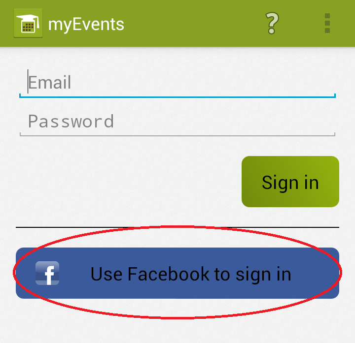
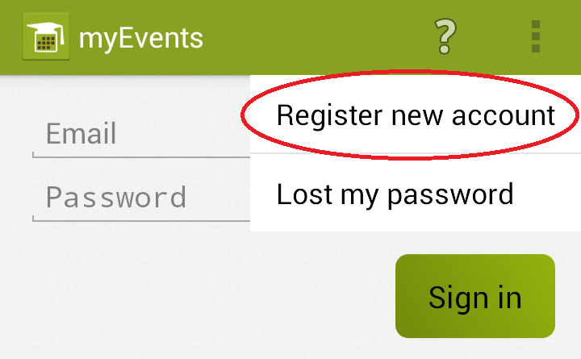
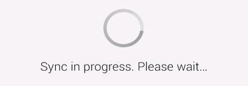

To be able to use the app, you need to login. There are two possibilities for logging in, both of them require active internet connection.
 If you have your Facebook account set up on your device, all you need to do is tapping the Use FB button, which can be found at login screen. After that you only need to confirm Facebook account access permissions, that might be requested.
Another way of logging in is using your myEvents account. That can be created at application web site or by registration screen.
 Registration screen can be accessed by tapping Register new account button in menu. You have to fill in few basic data into the form and send it. In case you use different email than your devices main one (the one prefilled in the form), you need to verify your email address. Instructions to do that will be sent to entered email address after sending the form.
 After successful login the app needs to download necessary data - do the sync. You will be notified about performing the first sync after logging in. After it's done, the app is ready to use. However if you don't want to wait, you can keep using your device as usual while performing the sync.